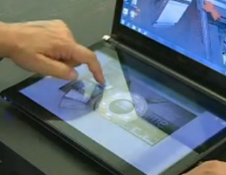
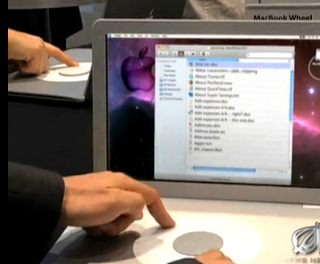

Life Imitates The Onion
2011-04-08
How is this (which is real):
different from this (which is not, but was fictitiously foretold over two years ago)?
And why on earth would anyone pay $1,200 for the real device, which weighs 6 pounds and has a battery life of about 3 hours; when you could get a MacBook Air that weighs less than half as much, has a battery that lasts about twice as long, and costs $200 less?
{kind=link}

different from this (which is not, but was fictitiously foretold over two years ago)?
{kind=link}

And why on earth would anyone pay $1,200 for the real device, which weighs 6 pounds and has a battery life of about 3 hours; when you could get a MacBook Air that weighs less than half as much, has a battery that lasts about twice as long, and costs $200 less?
It feels to me like someone at Acer, who (in my mind at least) speaks in Dave Letterman's Dumb Guy voice, showed up to a marketing meeting a year ago and said "Uh...if the kids like these touch-screen things so much, they'll LOVE something with TWO touch-screens." And then, in a cascade of disastrous decisions, a year later the product was launched.
Labels: Tech